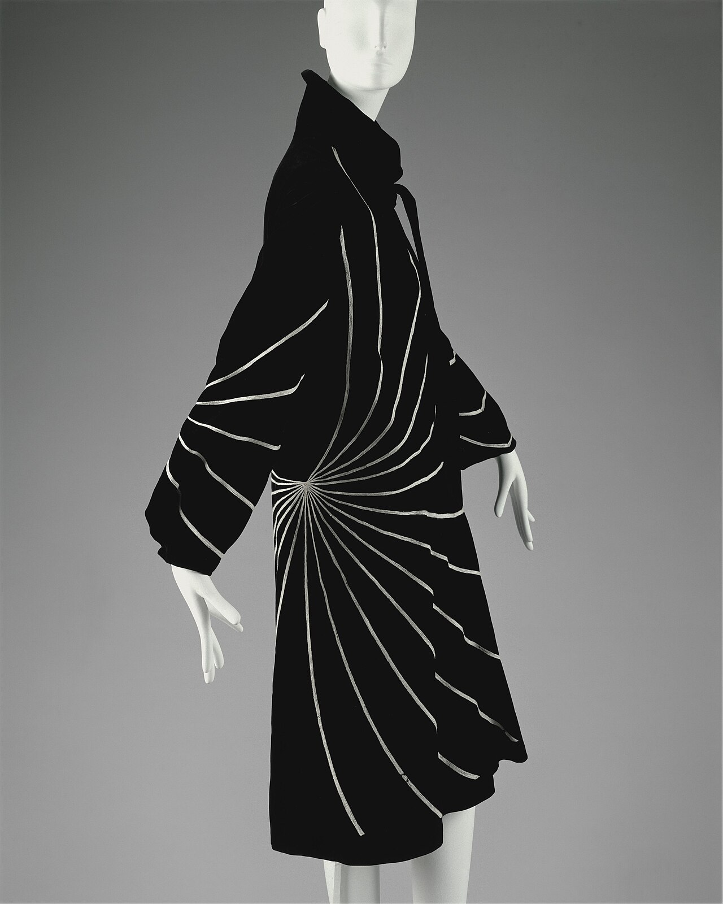
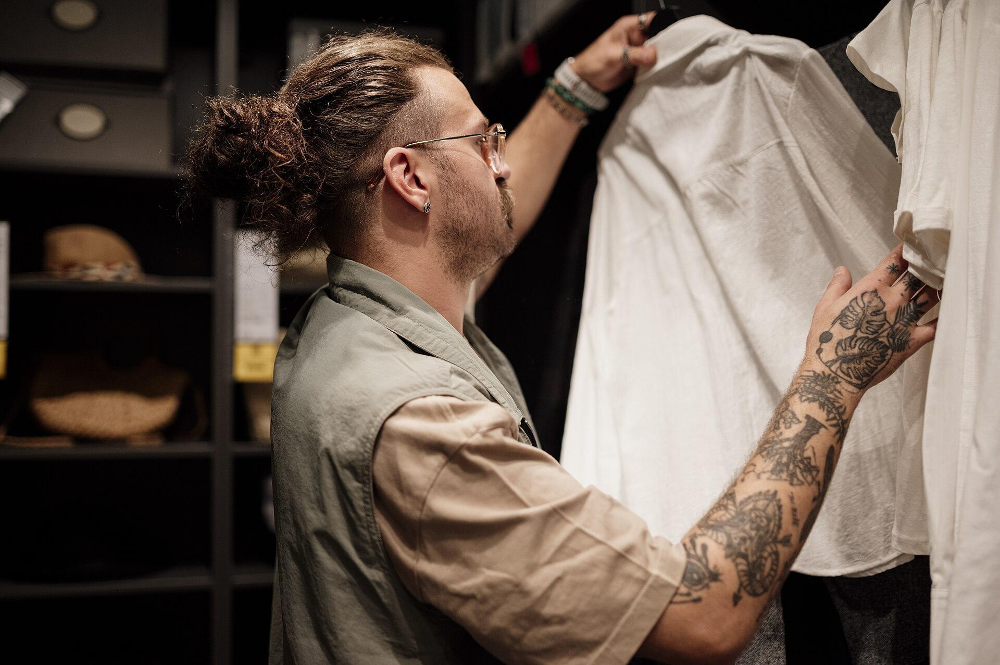
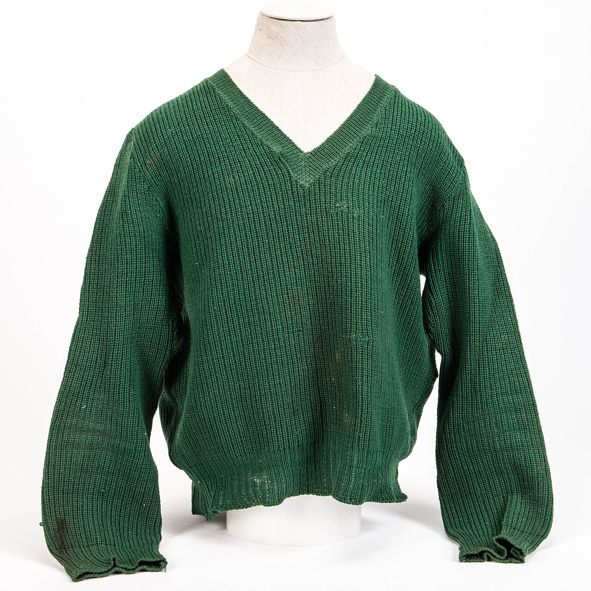
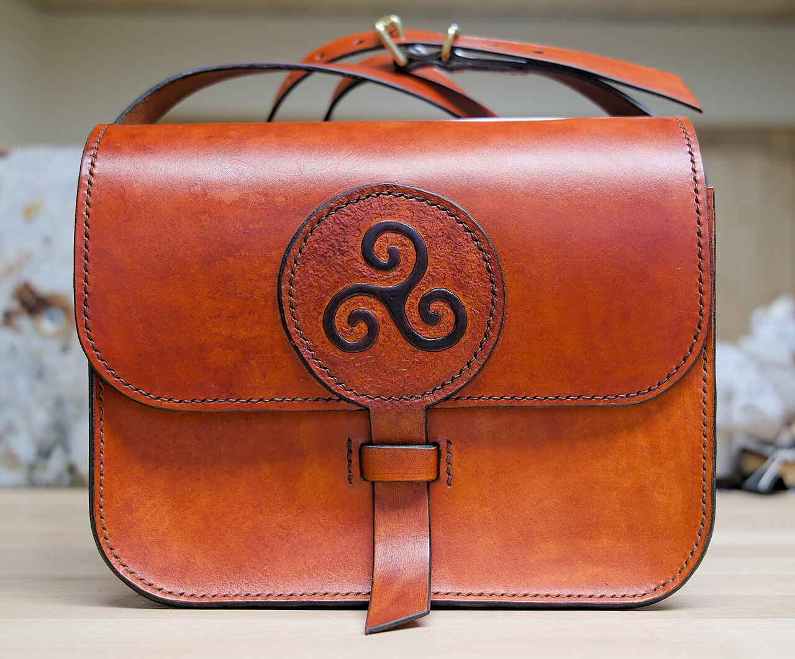

Abendgarderobe
Der Samtmantel
Fliessender Seidensamt, dramatisch gehalten durch eine einzige, fächerförmig auslaufende Stickerei.

Herbst / Winter · Kleine Auflage
Maison Ravel ist ein feines Modehaus für reduzierte Formen und natürliche Materialien — sorgfältig gefertigt, gemacht, um zu bleiben.
Das Haus
Maison Ravel ist keine Kollektion für eine Saison. Was uns leitet, lässt sich in drei Gedanken fassen.
Merinowolle, Leinen, pflanzlich gegerbtes Leder — Fasern, die schön altern und sich mit den Jahren an ihre Trägerin gewöhnen.
Klare Linien statt lauter Trends. Jedes Stück ist so entworfen, dass es in fünf Jahren noch dieselbe Ruhe ausstrahlt wie heute.
Wir fertigen in überschaubaren Serien, nicht auf Vorrat. Weniger, dafür mit Sorgfalt und ohne Eile hergestellt.
Lookbook
Eine editoriale Auswahl, die Stimmung und Handschrift des Hauses zeigt — vom Abendmantel bis zur Umhängetasche.

Fliessender Seidensamt, dramatisch gehalten durch eine einzige, fächerförmig auslaufende Stickerei.

Dicht gestrickte Wolle mit tiefem V-Ausschnitt — ein ruhiges Stück, das Struktur über Farbe stellt.

Pflanzlich gegerbtes Leder in warmem Cognac, von Hand genäht und mit einem einzigen Prägemotiv veredelt.
Hinweis: Die gezeigten Fotografien illustrieren Stil und Materialstimmung des Konzepts. Es handelt sich um frei lizenzierte Aufnahmen realer Kleidungs- und Sammlungsstücke, nicht um käufliche Artikel — Namen, Preise und Kollektion sind fiktiv.
Aus dem Atelier
Wir arbeiten bewusst mit einer knappen Palette an Fasern. Jede muss zwei Prüfungen bestehen: Sie soll sich gut anfühlen — und über Jahre schön altern.
Zugeschnitten und genäht wird in kleinen Werkstätten, mit Zeit für die Details, die man erst auf den zweiten Blick bemerkt.
Journal
Ein bis zwei Briefe pro Saison: neue Stücke, Blicke ins Atelier und limitierte Auflagen, bevor sie öffentlich werden.